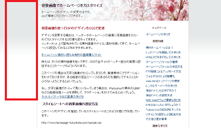

グラデーション素材でホームページ作成
ホームページの背景に、グラデーション素材をリピートして設定しているサイトも多く見受けられます。背景のほか、グローバルナビゲーションやヘッダー画像などもグラデーション素材で作成されているケースが多いです。
当サイト内の例でいいますと、このような箇所になります。
細長い背景素材を横方向にリピートして使用

文字を入れる箇所にグラデーションをかけて使用
ナビゲーションなどの素材としての使用
たいていの場合、１枚の画像を使用するのではなく、細長い小さな素材を横方向にリピートすることで使用されています。 イメージでいうとこのような感じになります。
Photoshopでのグラデーション素材の作り方
このようなグラデーション素材を作る際には、PhotoshopやGIMPなどの画像加工ソフトを使用するか、もしくはホームページの素材サイトで購入してくることをおすすめします。
Photoshopを使用して作る場合、グラデーションのアイコンをクリックし、グラデーションをかける方向や色彩などを選択すれば、簡単にかけることができます。
このようにして作成した素材、もしくは購入してきた素材を、適当な大きさにカットし、それをスタイルシート側でリピート設定して使用するとよいでしょう。
スタイルシートへの記述例
例えば、bodyタグの背景に、横方向に設定する場合はCSSファイルにこのように記述します。
body {
background-image:url(http://グラデーション素材の場所);
background-repeat:repeat-x;
}
background-repeat:repeat-x;
→ 横方向へリピート
background-repeat:repeat-y;
→ たて方向へリピート
background-repeat:repeat;
→ 縦・横方向へリピート
background-repeat:no-repeat;
→ リピートせずに１回だけそのまま表示
けれども、多用しすぎるとうるさいサイトになってしまうため注意しましょう。最近はどちらかというと、カラーコードの背景色のみで設定されているシンプルなホームページの作り方が主流になってきているようです。